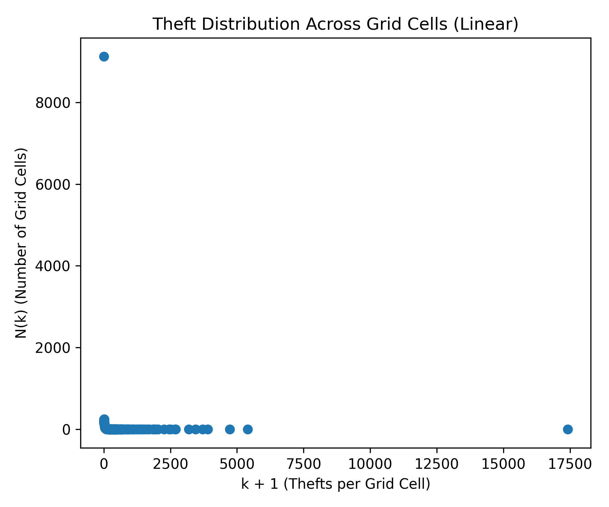
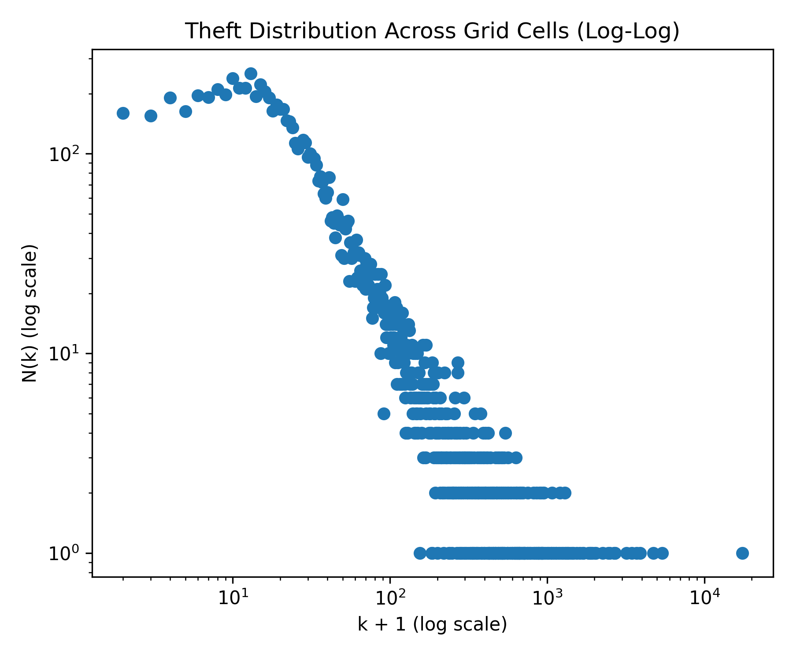

This project explores patterns in San Francisco crime data over the past 20 years. Through interactive visualizations, we uncover trends across time, location, and crime type.
Explore how crime varies across the day.
Compare crime frequency by hour in a different format.
See how crime is distributed geographically.
Understand patterns in theft-related crimes.
Focus on seasonal drug-related activity.

